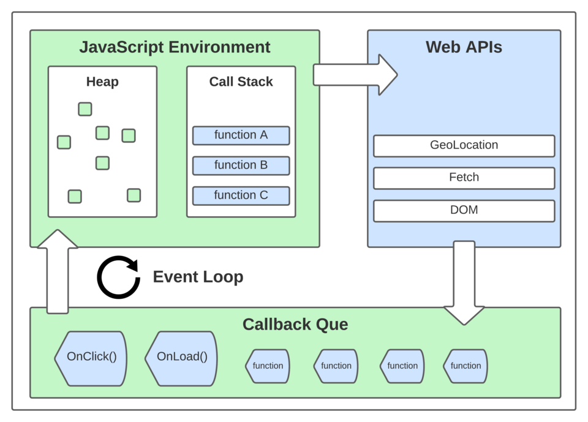

The Node.js event loop and CPU-bound work
Node serves thousands of connections on one thread because nothing blocks. A 200 ms synchronous call in a handler delays every connection by 200 ms. How to measure it and where to move the work.
Originally written on 14 February 2022. Migrated from a WordPress blog and reformatted.
Node.js runs JavaScript on a single thread. It achieves high concurrency not by running code in parallel but by never waiting: every I/O operation is handed to the operating system or a thread pool, and the JavaScript thread moves on. When the operation completes, its callback is queued, and the event loop runs it when the stack is empty.

Figure by Byteslovesbits, Wikimedia Commons, CC BY-SA 4.0.
{kind=link}
The loop
Simplified, each iteration of the loop:
- Runs timers whose time has come (
setTimeout,setInterval). - Runs I/O callbacks for completed operations (file reads, socket data, DNS).
- Polls for new I/O events, blocking briefly if nothing is pending.
- Runs
setImmediatecallbacks. - Runs close callbacks.
Between every callback, the microtask queue is drained: resolved promises and process.nextTick callbacks run before the loop advances. This is why an await on an already-resolved promise still yields to other microtasks but not to I/O.
The consequence that matters operationally: a callback that runs for 200 ms delays every other callback by 200 ms. Every open HTTP connection, every timer, every completed database query waits until the running callback returns.
Recognising the problem
An HTTP service whose p99 latency rises under load while CPU sits at 100 percent on a single core, and whose average latency is fine, is usually blocking the loop. The --cpu-prof flag or the perf_hooks monitor confirms it:
const { monitorEventLoopDelay } = require('perf_hooks');
const h = monitorEventLoopDelay({ resolution: 20 });
h.enable();
setInterval(() => console.log('loop delay p99 ms', h.percentile(99) / 1e6), 5000);A p99 loop delay above a few milliseconds under load means callbacks are running too long.
Common causes
- Synchronous file system calls:
fs.readFileSync,fs.existsSyncin a request handler. - JSON parsing or serialisation of large payloads.
JSON.parseon 50 MB blocks for hundreds of milliseconds. - Regular expressions with catastrophic backtracking on user input.
- Cryptography:
crypto.pbkdf2Sync,bcrypt.hashSync. The async versions run on the thread pool. - Image processing, compression, or any loop over a large array in a handler.
console.logto a slow pipe, which is synchronous for files and pipes.
Moving CPU-bound work off the loop
Worker threads. Since Node 12, worker_threads runs JavaScript on separate threads with their own event loops, communicating by message passing.
// main.js
const { Worker } = require('worker_threads');
function hashPassword(password) {
return new Promise((resolve, reject) => {
const w = new Worker('./hash-worker.js', { workerData: password });
w.once('message', resolve);
w.once('error', reject);
});
}
// hash-worker.js
const { parentPort, workerData } = require('worker_threads');
const bcrypt = require('bcrypt');
parentPort.postMessage(bcrypt.hashSync(workerData, 12));Spawning a worker per request costs tens of milliseconds; use a pool (piscina is the usual choice) for anything called frequently.
The libuv thread pool. Node's built-in async functions for file I/O, DNS, and crypto already run on a pool of four threads. UV_THREADPOOL_SIZE raises the count. This helps when the bottleneck is those specific operations, and does nothing for user code.
Chunking. For a long loop over data that must stay on the main thread, yield between chunks with setImmediate so I/O callbacks can run. This does not reduce total CPU time; it interleaves it with other work.
A separate service. CPU-heavy work that dominates the application belongs in a process designed for it, in whatever language is appropriate, behind a queue.
Summary
Node's concurrency model is efficient precisely because the main thread never waits. Any synchronous work of more than a few milliseconds in a handler undermines it for every concurrent client. Measure loop delay, find the blocking calls, and move them to workers or out of the process.